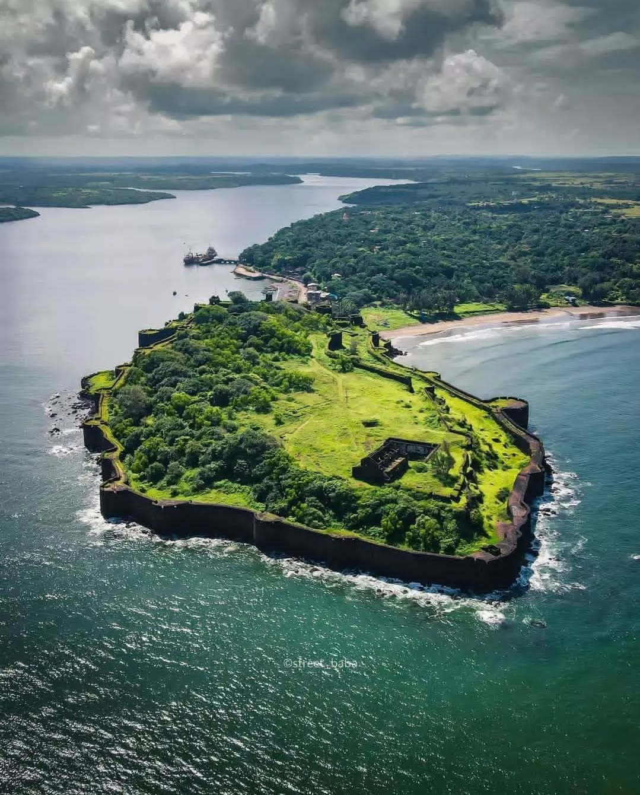
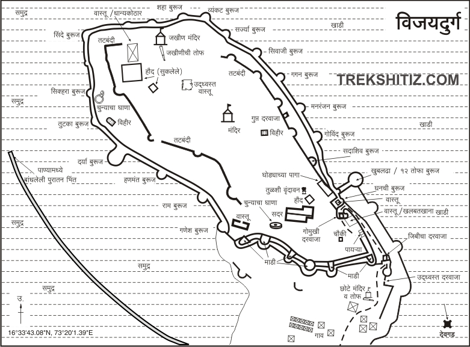
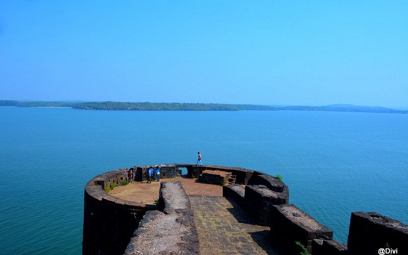
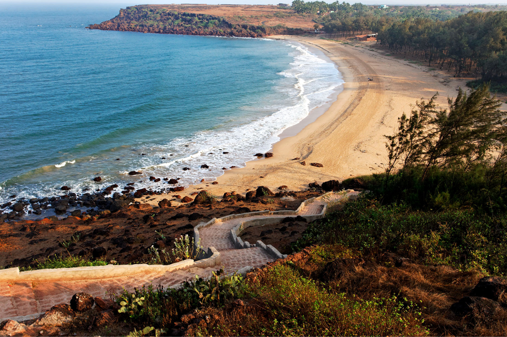
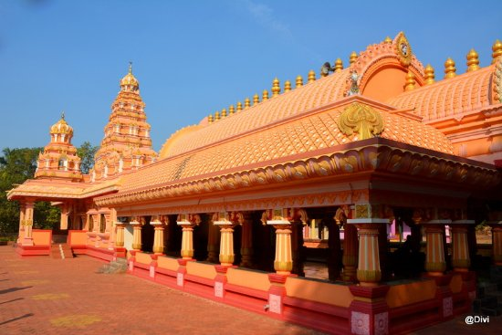

Vijaydurg Fort





Vijaydurg Fort, an iconic 17th-century coastal fort, stands proudly on the Konkan coast of Maharashtra, near the town of Devgad. Commissioned by the legendary Maratha king Chhatrapati Shivaji Maharaj, this architectural marvel was designed to bolster the naval power of the Maratha Empire and defend its territories from foreign invasions. The fort was constructed under the supervision of skilled architects and engineers and underwent significant enhancements during Shivaji’s reign. Strategically located on a rocky peninsula, Vijaydurg Fort is a testament to advanced military architecture. It is surrounded by the sea on three sides, with a massive stone wall stretching over 1.5 kilometers and fortified with numerous bastions, many of which remain well-preserved. The fort's design integrates seamlessly with its natural surroundings, making it a formidable defensive structure. The fort is also known for its underwater trench, a unique feature that further protected it from enemy ships and invasions. A remarkable feature of Vijaydurg Fort is its secret escape routes and hidden underground tunnels, used for strategic retreats and movements during battles. The fort also houses freshwater wells, a rare accomplishment for a sea fort, ensuring a sustainable water supply for its inhabitants. Within the fort complex are granaries, watchtowers, and residential quarters for soldiers, showcasing its self-sufficient and well-planned design.

Vijaydurg Fort features a unique underwater trench, approximately 10 meters deep, surrounding the fort on its sea-facing sides. This trench acted as an additional line of defense, preventing enemy ships from approaching the fort easily

The fort boasts a triple-layered defensive structure, making it nearly impenetrable during its time. These fortifications include massive stone walls, strategically placed bastions, and a clever layout to confuse and repel invaders.

Vijaydurg Fort served as the primary naval base for Kanhoji Angre, the celebrated admiral of the Maratha Navy. It was a center for naval operations and played a crucial role in maintaining Maratha dominance along the Konkan coast.

The Maha Darwaja (Main Entrance) of Vijaydurg Fort is a remarkable example of Maratha engineering and strategic design. Cleverly concealed within the fort’s massive walls, the entrance was designed to blend seamlessly with its surroundings, making it difficult for invaders to locate. The zigzag pathway leading to the gate slowed enemy advances, while defenders could attack from bastions and watchtowers flanking the entrance. Constructed with thick, stone-reinforced wood and embedded with iron spikes, the gate was built to withstand battering and assaults by war elephants.
.jpg)
The hidden tunnels of Vijaydurg Fort are one of its most fascinating features, showcasing the strategic brilliance of Maratha engineering. These underground passages were designed to serve multiple purposes, including providing secret escape routes during sieges, facilitating the discreet movement of supplies and troops, and connecting different parts of the fort for enhanced defense. Some tunnels are believed to extend beyond the fort, leading to hidden exits several kilometers away, offering an additional layer of security in emergencies. Though many of these tunnels are now sealed or in ruins, they remain a testament to the ingenuity and foresight of the fort’s architects.

The naval dockyard at Vijaydurg Fort is a remarkable feature that underscores the Maratha Empire's maritime strength and strategic foresight. This dockyard served as a vital base for building and repairing ships, reinforcing the fort’s role as a key naval outpost. Protected by the surrounding fortifications and the natural geography of the coastline, it provided a secure and efficient facility for maintaining the Maratha navy. The dockyard played a pivotal role during the reign of Admiral Kanhoji Angre, who used Vijaydurg as a primary base for his naval operations, including defending the Konkan coast against European powers.

Distance: 30 km
Devgad Beach, located in the picturesque Konkan region of Maharashtra, is a serene and unspoiled stretch of coastline known for its pristine golden sands and crystal-clear waters. Nestled near the town of Devgad, this beach offers a tranquil escape from the hustle and bustle of city life.

Distance: 30 km
The Devgad Windmill Garden is a picturesque destination located atop a hill near the coastal town of Devgad in Maharashtra. This unique spot features towering wind turbines set against the backdrop of lush green landscapes and the sparkling Arabian Sea.

Distance: 25 km
The Rameshwar Temple in Achara is a revered spiritual site and a fine example of traditional Konkani temple architecture. Located near Malvan in the Sindhudurg district of Maharashtra, this temple is dedicated to Lord Shiva, locally worshipped as Rameshwar.

Distance: 40 km
The temple is believed to have been built in the 11th century by the Yadava dynasty, with later contributions from Chhatrapati Shivaji Maharaj during the Maratha rule. Its rich history makes it a prominent cultural and religious landmark in the region.